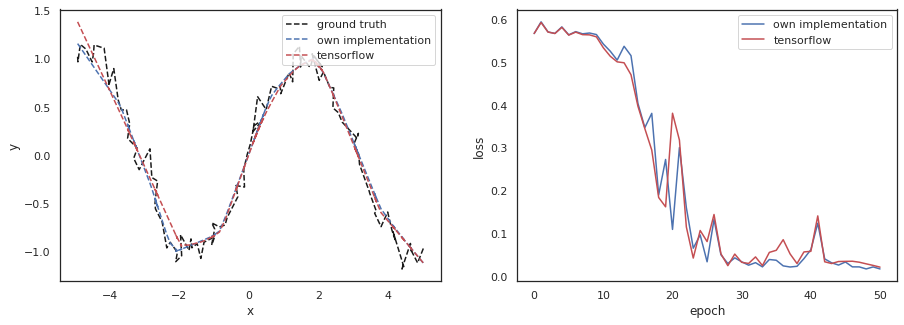

import numpy as np
from numpy.random import default_rngNeural network backpropagation
ml
Mini-batched multilayer perceptron stochastic gradient descent

1. Introduction
This is a simple implementation of the multilayer perceptron algorithm in python3 and numpy.
Features: - Arbitrary depth and shape - Supports (mini-)batches - L2 Loss / Mean Squared Error - Validated by comparing outputs with the TensorFlow deep learning framework
Formulas used:
\[\begin{equation} \begin{split} \text{Output of a neuron} & : neuron(x,w,b) = x*w+b \\ \\ \text{Derivative of a neuron w.r.t. its input} & : \frac{\partial neuron}{\partial x} = w \\ \text{Derivative of a neuron w.r.t. its weight} & : \frac{\partial neuron}{\partial w} = x \\ \text{Derivative of a neuron w.r.t. its bias} & : \frac{\partial neuron}{\partial b} = 1 \\ \\ \text{Output of ReLu} & : relu(x) = \begin{cases} x, & \text{if } x > 0\\ 0, & \text{otherwise} \end{cases} \\ \\ \text{Derivative of ReLu w.r.t. its input} & : \frac{\partial relu}{\partial x} = \begin{cases} 1, & \text{if } x > 0\\ 0, & \text{if } x < 0\\ 0, & \text{if } x = 0 \text{ (undefined, 0 by convention)} \end{cases} \\ \\ \text{MSE} & : mse(output, labels) = \frac{1}{N}\sum{(output-labels)^2} \\ \\ \text{Derivative of MSE w.r.t. to predictions} & : \frac{\partial mse}{\partial output} = \frac{1}{2N}\sum{(output-labels)} \\ \\ \text{Sum rule} & : (f+g)'=f'+g'\\ \\ \text{Chain rule} & : \frac{\partial l_2}{\partial x}(x) = \frac{\partial l_2}{\partial l_1}(l_1) \cdot \frac{\partial l_1}{\partial x}(x) \\ \\ layer_1 \text{ input} & : x \\ layer_1 \text{ output} & : l_1(x) \\ layer_2 \text{ input} & : l_1(x) \\ layer_2 \text{ output} & : l_2(l_1(x)) \end{split} \end{equation}\]
2. Implementation
class Net:
def __init__(self, layout):
self.layers = []
last_index = len(layout) - 2
for index in range(last_index + 1):
inputs = layout[index]
outputs = layout[index + 1]
self.layers.append(Layer(inputs, outputs))
if index != last_index:
self.layers.append(Relu())
self.forward_data = [None] * (len(self.layers) + 1)
self.backward_data = [None] * (len(self.layers) + 1)
self.loss_value = None
def forward(self, input_data):
self.forward_data[0] = input_data
for index in range(len(self.layers)):
self.forward_data[index + 1] = self.layers[index].forward(
self.forward_data[index])
def backward(self, label_data, learning_rate):
self.loss_value = self.calculate_loss(
self.get_output(), label_data)
self.backward_data[-1] = self.calculate_loss_gradient(
self.get_output(), label_data)
for index in reversed(range(1, len(self.backward_data))):
self.backward_data[index - 1] = self.layers[index - 1].backward(
self.forward_data[index - 1],
self.backward_data[index],
learning_rate)
def forward_backward(self, input_data, label_data, learning_rate):
self.forward(input_data)
self.backward(label_data, learning_rate)
def calculate_loss(self, output_value, label_data):
return np.square(output_value - label_data).mean()
def calculate_loss_gradient(self, output_value, label_data):
output_size = label_data.shape[1]
return 2 * (output_value - label_data) / output_size
def get_output(self):
return self.forward_data[-1]
def get_loss(self):
return self.loss_value
class Layer:
def __init__(self, inputs, outputs):
self.weights = rng.normal(scale=0.05, size=(inputs, outputs))
self.biases = np.zeros(outputs)
def forward(self, input_value):
output_value = input_value @ self.weights + self.biases
return output_value
def backward(self, input_value, gradient_value, learning_rate):
# "*" operator: chain rule
# "sum" function: sum rule
# (return value is computed before weights are updated)
return_value = (self.weights[np.newaxis, :, :] *
gradient_value[:, np.newaxis, :]).sum(2)
# averages of batch gradients
self.weights += self.calculate_update(
(input_value[:, :, np.newaxis] *
gradient_value[:, np.newaxis, :]).mean(0),
learning_rate)
self.biases += self.calculate_update(
gradient_value.mean(0),
learning_rate)
return return_value
def calculate_update(self, gradient, learning_rate):
return gradient * learning_rate * -1
class Relu:
def forward(self, input_value):
return np.clip(input_value, 0, None)
def backward(self, input_value, gradient_value, learning_rate):
# "*" operator: chain rule
return (input_value > 0) * gradient_value3. Comparison with TensorFlow
3.1. Wrappers for uniform handling of implemented and tensorflow models
import tensorflow as tf
import matplotlib as mpl
from matplotlib import pyplot as plt
import seaborn as sns
import tqdm.auto as tq
rng = default_rng(42)
sns.set(style="white")class Wrapper:
def __init__(self, name, layout, learning_rate, weight_initializer=None):
self.__name=name
self.__layout=layout
pass
def train_step(self, x, y):
pass
def get_loss(self, x, y):
pass
def get_outputs(self, x):
pass
@property
def variables(self):
pass
@property
def name(self):
return self.__name
@property
def layout(self):
return self.__layout
class NetWrapper(Wrapper):
def __init__(self, name, layout, learning_rate, weight_initializer=None):
super().__init__(name, layout, learning_rate, weight_initializer)
self.learning_rate = learning_rate
self.net = Net(layout)
if weight_initializer == "ones":
weight_initializer = lambda shape: np.ones(shape=shape)
for layer in self.net.layers:
if type(layer) is Layer:
layer.weights = weight_initializer(layer.weights.shape)
def train_step(self, x, y):
self.net.forward_backward(x, y, self.learning_rate)
def get_loss(self, x, y):
self.net.forward_backward(x, y, learning_rate=0)
return self.net.get_loss()
def get_outputs(self, x):
self.net.forward(x)
outputs = []
for i, layer in enumerate(self.net.layers):
if type(layer) is Relu:
outputs.append(self.net.forward_data[i + 1])
outputs.append(self.net.forward_data[-1])
return outputs
@property
def variables(self):
variables = {}
c = 1
for layer in self.net.layers:
if type(layer) is Layer:
variables[f"layer {c} weights"] = layer.weights
variables[f"layer {c} biases"] = layer.biases
c += 1
return variables
class TfModelWrapper(Wrapper):
def __init__(self, name, layout, learning_rate, weight_initializer=None):
super().__init__(name, layout, learning_rate, weight_initializer)
if weight_initializer == "ones":
weight_initializer = tf.keras.initializers.Ones()
else:
weight_initializer = tf.keras.initializers.RandomNormal(
stddev=0.05)
inputs = tf.keras.Input(shape=(layout[0],), dtype="float64")
previous_layer = inputs
for layer_size in layout[1:-1]:
layer = tf.keras.layers.Dense(
layer_size, activation="relu",
kernel_initializer=weight_initializer,
bias_initializer=tf.keras.initializers.Zeros(),
dtype="float64")(previous_layer)
previous_layer = layer
outputs = tf.keras.layers.Dense(
layout[-1],
kernel_initializer=weight_initializer,
bias_initializer=tf.keras.initializers.Zeros(),
dtype="float64")(previous_layer)
self.model = tf.keras.Model(inputs=inputs, outputs=outputs)
self.optimizer = tf.keras.optimizers.SGD(learning_rate=learning_rate)
self.loss = tf.keras.losses.MeanSquaredError()
def train_step(self, x, y):
with tf.GradientTape() as tape:
loss_value = self.loss(y, self.model(x, training=True))
grads = tape.gradient(loss_value, self.model.trainable_weights)
self.optimizer.apply_gradients(
zip(grads, self.model.trainable_weights))
def get_loss(self, x, y):
return self.loss(y, self.model(x)).numpy()
def get_outputs(self, x):
outputs = []
previous_output = x
for layer in self.model.layers[1:]:
previous_output = layer(previous_output)
outputs.append(previous_output.numpy())
return outputs
@property
def variables(self):
variables = {}
for i, layer in enumerate(self.model.layers[1:]):
w, b = layer.get_weights()
variables[f"layer {i + 1} weights"] = w
variables[f"layer {i + 1} biases"] = b
return variables3.2. Full training comparison
def wrapper_trainer(wrappers, x, y, batch_size, epochs):
examples = len(x)
results = {wrapper.name: {"epochs": [], "losses": [], "outputs": None}
for wrapper in wrappers}
for wrapper in wrappers:
results[wrapper.name]["epochs"].append(0)
results[wrapper.name]["losses"].append(wrapper.get_loss(x, y))
for epoch in tq.trange(1, epochs + 1):
permutation = rng.permutation(examples)
x_shuffled = x[permutation]
y_shuffled = y[permutation]
for batch in range(examples // batch_size):
x_batch = x_shuffled[batch * batch_size: (batch + 1) * batch_size]
y_batch = y_shuffled[batch * batch_size: (batch + 1) * batch_size]
for wrapper in wrappers:
wrapper.train_step(x_batch, y_batch)
for wrapper in wrappers:
results[wrapper.name]["epochs"].append(epoch)
results[wrapper.name]["losses"].append(wrapper.get_loss(x, y))
for wrapper in wrappers:
results[wrapper.name]["outputs"] = wrapper.get_outputs(x)
return resultslayout = [1, 32, 32, 1]
batch_size = 4
epochs = 50
learning_rate = 0.1
wrappers = (TfModelWrapper("tf", layout, learning_rate),
NetWrapper("own", layout, learning_rate))
examples = 100
# square function
def f(x):
# return x**2
return np.sin(x)
x = np.linspace(-5, 5, examples)[:, np.newaxis]
y = f(x)
# noise
x += rng.normal(scale=0.1, size=x.shape)
y += rng.normal(scale=0.1, size=y.shape)
x_norm = (x - x.mean()) / x.std()
results = wrapper_trainer(
wrappers=wrappers,
x=x_norm,
y=y,
batch_size=batch_size,
epochs=epochs)
fig, axs = plt.subplots(1, 2, figsize=(15, 5))
axs[0].plot(x, y, "k--", label="ground truth")
axs[0].plot(x, results["own"]["outputs"][-1], "b--", label="own implementation")
axs[0].plot(x, results["tf"]["outputs"][-1], "r--", label="tensorflow")
axs[0].set(xlabel="x", ylabel="y")
axs[0].legend()
axs[1].plot(results["own"]["epochs"], results["own"]["losses"], "b",
label="own implementation")
axs[1].plot(results["tf"]["epochs"], results["tf"]["losses"], "r",
label="tensorflow")
axs[1].set(xlabel="epoch", ylabel="loss")
axs[1].legend();
3.3. Step-by-step compatison of variables and outputs
def wrapper_debugger(wrappers, batch_size, steps):
def values_close(a, b):
tolerance = dict(rtol=1e-1, atol=0) # 10% tolerance
if isinstance(a, np.float64):
return np.allclose(a, b, **tolerance)
elif isinstance(a, list):
for i in range(len(a)):
if not np.allclose(a[i], b[i], **tolerance):
return False
return True
elif isinstance(a, dict):
for k in a.keys():
if not np.allclose(a[k], b[k], **tolerance):
return False
return True
else:
assert False, "unhandled type"
assert len(wrappers) == 2, "can only compare 2 wrappers"
inputs = wrappers[0].layout[0]
outputs = wrappers[0].layout[-1]
for step in range(steps + 1):
print(f"STEP {step}:")
x = rng.integers(-1, 1, size=(batch_size, inputs), endpoint=True)
y = rng.integers(-1, 1, size=(batch_size, outputs), endpoint=True)
data = {}
for wrapper in wrappers:
if step != 0:
wrapper.train_step(x, y)
data[wrapper.name] = dict(
loss=wrapper.get_loss(x, y),
outputs=wrapper.get_outputs(x),
variables=wrapper.variables)
difference = False
for key in tuple(data.values())[0].keys():
values1 = tuple(data.values())[0][key]
values2 = tuple(data.values())[1][key]
if not values_close(values1, values2):
difference = True
print(f"{key} DIFFERENCE!")
for name, datum in data.items():
print(name)
print(datum[key])
print()
if difference:
return
else:
print("OK")layout = [3, 4, 5]
weight_initializer = "ones"
batch_size = 20
steps = 10
learning_rate = 1
wrappers = (TfModelWrapper("tf", layout, learning_rate, weight_initializer),
NetWrapper("own", layout, learning_rate, weight_initializer))
wrapper_debugger(
wrappers=wrappers,
batch_size=batch_size,
steps=steps)STEP 0:
OK
STEP 1:
OK
STEP 2:
OK
STEP 3:
OK
STEP 4:
OK
STEP 5:
OK
STEP 6:
OK
STEP 7:
OK
STEP 8:
OK
STEP 9:
OK
STEP 10:
OK